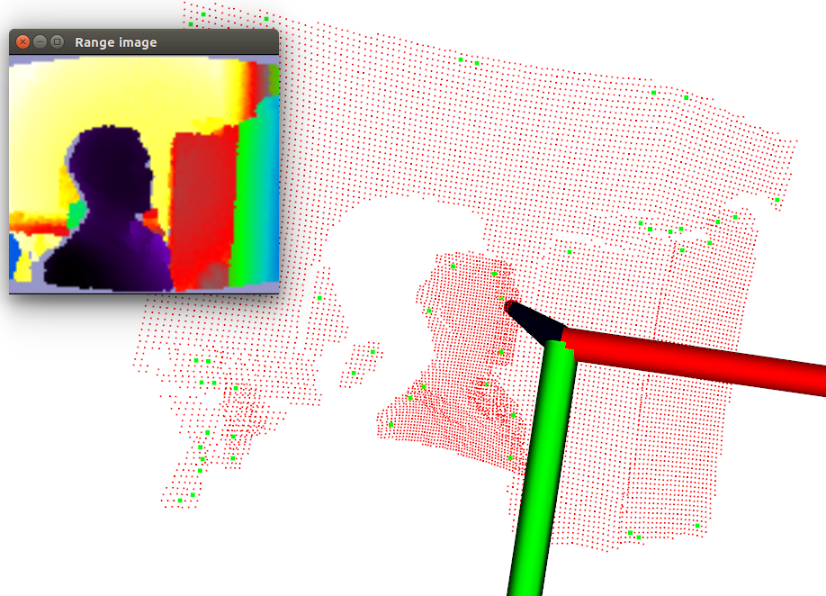

03-关键点Keypoints¶
关键点也称为兴趣点，它是 2D 图像或 3D 点云或曲面模型上,可以通过检测标准来获取的具有稳定性、区别性的点集。从技术上来说,关键点的数量比原始点云或图像的数据量少很多，其与局部特征描述子结合组成关键点描述子。常用来构成原始数据的紧凑表示 ，具有代表性与描述性，从而加快后续识别、追踪等对数据的处理速度 。
固而，关键点提取就成为 2D 与 3D 信息处理中不可或缺的关键技术 。
关键点概念及算法¶
NARF（Normal Aligned Radial Feature）关键点是为了从深度图像中识别物体而提出的，关键点探测的重要一步是减少特征提取时的搜索空间，把重点放在重要的结构上，对 NARF 关键点提取过程有以下要求：
- 提取的过程必须考虑边缘以及物体表面变化信息
- 即使换了不同的视角，关键点的位置必须稳定的可以被重复探测
- 关键点所在的位置必须有稳定的支持区域，可以计算描述子和估计唯一的法向量。
为了满足上述要求，可以通过以下探测步骤来进行关键点提取：
- 遍历每个深度图像点，通过寻找在近邻区域有深度突变的位置进行边缘检测；
- 历每个深度图像点，根据近邻区域的表面变化决定一测度表面变化的系数，以及变化的主方向；
- 根据第2步找到的主方向计算兴趣值，表征该方向与其他方向的不同，以及该处表面的变化情况，即该点有多稳定；
- 对兴趣值进行平滑过滤；
- 进行无最大值压缩找到最终的关键点，即为 NARF 关键点。
代码实现¶
narf_keypoint_extraction.cpp
/* \author Bastian Steder */
#include <iostream>
#include <boost/thread/thread.hpp>
#include <pcl/range_image/range_image.h>
#include <pcl/io/pcd_io.h>
#include <pcl/visualization/range_image_visualizer.h>
#include <pcl/visualization/pcl_visualizer.h>
#include <pcl/features/range_image_border_extractor.h>
#include <pcl/keypoints/narf_keypoint.h>
#include <pcl/console/parse.h>
typedef pcl::PointXYZ PointType;
// --------------------
// -----Parameters-----
// --------------------
float angular_resolution = 0.5f;
float support_size = 0.2f;
pcl::RangeImage::CoordinateFrame coordinate_frame = pcl::RangeImage::CAMERA_FRAME;
bool setUnseenToMaxRange = false;
// --------------
// -----Help-----
// --------------
void
printUsage(const char *progName) {
std::cout << "\n\nUsage: " << progName << " [options] <scene.pcd>\n\n"
<< "Options:\n"
<< "-------------------------------------------\n"
<< "-r <float> angular resolution in degrees (default " << angular_resolution << ")\n"
<< "-c <int> coordinate frame (default " << (int) coordinate_frame << ")\n"
<< "-m Treat all unseen points as maximum range readings\n"
<< "-s <float> support size for the interest points (diameter of the used sphere - "
<< "default " << support_size << ")\n"
<< "-h this help\n"
<< "\n\n";
}
//void
//setViewerPose (pcl::visualization::PCLVisualizer& viewer, const Eigen::Affine3f& viewer_pose)
//{
//Eigen::Vector3f pos_vector = viewer_pose * Eigen::Vector3f (0, 0, 0);
//Eigen::Vector3f look_at_vector = viewer_pose.rotation () * Eigen::Vector3f (0, 0, 1) + pos_vector;
//Eigen::Vector3f up_vector = viewer_pose.rotation () * Eigen::Vector3f (0, -1, 0);
//viewer.setCameraPosition (pos_vector[0], pos_vector[1], pos_vector[2],
//look_at_vector[0], look_at_vector[1], look_at_vector[2],
//up_vector[0], up_vector[1], up_vector[2]);
//}
// --------------
// -----Main-----
// --------------
int
main(int argc, char **argv) {
// --------------------------------------
// -----Parse Command Line Arguments-----
// --------------------------------------
if (pcl::console::find_argument(argc, argv, "-h") >= 0) {
printUsage(argv[0]);
return 0;
}
if (pcl::console::find_argument(argc, argv, "-m") >= 0) {
setUnseenToMaxRange = true;
cout << "Setting unseen values in range image to maximum range readings.\n";
}
int tmp_coordinate_frame;
if (pcl::console::parse(argc, argv, "-c", tmp_coordinate_frame) >= 0) {
coordinate_frame = pcl::RangeImage::CoordinateFrame(tmp_coordinate_frame);
cout << "Using coordinate frame " << (int) coordinate_frame << ".\n";
}
if (pcl::console::parse(argc, argv, "-s", support_size) >= 0)
cout << "Setting support size to " << support_size << ".\n";
if (pcl::console::parse(argc, argv, "-r", angular_resolution) >= 0)
cout << "Setting angular resolution to " << angular_resolution << "deg.\n";
angular_resolution = pcl::deg2rad(angular_resolution);
// ------------------------------------------------------------------
// -----Read pcd file or create example point cloud if not given-----
// ------------------------------------------------------------------
pcl::PointCloud<PointType>::Ptr point_cloud_ptr(new pcl::PointCloud<PointType>);
pcl::PointCloud<PointType> &point_cloud = *point_cloud_ptr;
pcl::PointCloud<pcl::PointWithViewpoint> far_ranges;
Eigen::Affine3f scene_sensor_pose(Eigen::Affine3f::Identity ());
std::vector<int> pcd_filename_indices = pcl::console::parse_file_extension_argument(argc, argv, "pcd");
if (!pcd_filename_indices.empty()) {
std::string filename = argv[pcd_filename_indices[0]];
if (pcl::io::loadPCDFile(filename, point_cloud) == -1) {
cerr << "Was not able to open file \"" << filename << "\".\n";
printUsage(argv[0]);
return 0;
}
scene_sensor_pose = Eigen::Affine3f(Eigen::Translation3f(point_cloud.sensor_origin_[0],
point_cloud.sensor_origin_[1],
point_cloud.sensor_origin_[2])) *
Eigen::Affine3f(point_cloud.sensor_orientation_);
std::string far_ranges_filename = pcl::getFilenameWithoutExtension(filename) + "_far_ranges.pcd";
if (pcl::io::loadPCDFile(far_ranges_filename.c_str(), far_ranges) == -1)
std::cout << "Far ranges file \"" << far_ranges_filename << "\" does not exists.\n";
} else {
setUnseenToMaxRange = true;
cout << "\nNo *.pcd file given => Generating example point cloud.\n\n";
for (float x = -0.5f; x <= 0.5f; x += 0.01f) {
for (float y = -0.5f; y <= 0.5f; y += 0.01f) {
PointType point;
point.x = x;
point.y = y;
point.z = 2.0f - y;
point_cloud.points.push_back(point);
}
}
point_cloud.width = (int) point_cloud.points.size();
point_cloud.height = 1;
}
// -----------------------------------------------
// -----Create RangeImage from the PointCloud-----
// -----------------------------------------------
float noise_level = 0.0;
float min_range = 0.0f;
int border_size = 1;
boost::shared_ptr<pcl::RangeImage> range_image_ptr(new pcl::RangeImage);
pcl::RangeImage &range_image = *range_image_ptr;
range_image.createFromPointCloud(point_cloud, angular_resolution,
pcl::deg2rad(360.0f), pcl::deg2rad(180.0f),
scene_sensor_pose, coordinate_frame, noise_level, min_range, border_size);
range_image.integrateFarRanges(far_ranges);
if (setUnseenToMaxRange)
range_image.setUnseenToMaxRange();
// --------------------------------------------
// -----Open 3D viewer and add point cloud-----
// --------------------------------------------
pcl::visualization::PCLVisualizer viewer("3D Viewer");
viewer.setBackgroundColor(1, 1, 1);
pcl::visualization::PointCloudColorHandlerCustom<pcl::PointWithRange> range_image_color_handler(range_image_ptr,
255, 0, 0);
viewer.addPointCloud(range_image_ptr, range_image_color_handler, "range image");
viewer.setPointCloudRenderingProperties(pcl::visualization::PCL_VISUALIZER_POINT_SIZE, 2, "range image");
viewer.addCoordinateSystem (1.0f, "global");
//PointCloudColorHandlerCustom<PointType> point_cloud_color_handler (point_cloud_ptr, 150, 150, 150);
//viewer.addPointCloud (point_cloud_ptr, point_cloud_color_handler, "original point cloud");
viewer.initCameraParameters();
//setViewerPose (viewer, range_image.getTransformationToWorldSystem ());
// --------------------------
// -----Show range image-----
// --------------------------
pcl::visualization::RangeImageVisualizer range_image_widget("Range image");
range_image_widget.showRangeImage(range_image);
// --------------------------------
// -----Extract NARF keypoints-----
// --------------------------------
pcl::RangeImageBorderExtractor range_image_border_extractor;
pcl::NarfKeypoint narf_keypoint_detector(&range_image_border_extractor);
narf_keypoint_detector.setRangeImage(&range_image);
narf_keypoint_detector.getParameters().support_size = support_size;
//narf_keypoint_detector.getParameters ().add_points_on_straight_edges = true;
//narf_keypoint_detector.getParameters ().distance_for_additional_points = 0.5;
pcl::PointCloud<int> keypoint_indices;
narf_keypoint_detector.compute(keypoint_indices);
std::cout << "Found " << keypoint_indices.points.size() << " key points.\n";
// ----------------------------------------------
// -----Show keypoints in range image widget-----
// ----------------------------------------------
//for (size_t i=0; i<keypoint_indices.points.size (); ++i)
//range_image_widget.markPoint (keypoint_indices.points[i]%range_image.width,
//keypoint_indices.points[i]/range_image.width);
// -------------------------------------
// -----Show keypoints in 3D viewer-----
// -------------------------------------
pcl::PointCloud<pcl::PointXYZ>::Ptr keypoints_ptr(new pcl::PointCloud<pcl::PointXYZ>);
pcl::PointCloud<pcl::PointXYZ> &keypoints = *keypoints_ptr;
keypoints.points.resize(keypoint_indices.points.size());
for (size_t i = 0; i < keypoint_indices.points.size(); ++i)
keypoints.points[i].getVector3fMap() = range_image.points[keypoint_indices.points[i]].getVector3fMap();
pcl::visualization::PointCloudColorHandlerCustom<pcl::PointXYZ> keypoints_color_handler(keypoints_ptr, 0, 255, 0);
viewer.addPointCloud<pcl::PointXYZ>(keypoints_ptr, keypoints_color_handler, "keypoints");
viewer.setPointCloudRenderingProperties(pcl::visualization::PCL_VISUALIZER_POINT_SIZE, 5, "keypoints");
//--------------------
// -----Main loop-----
//--------------------
while (!viewer.wasStopped()) {
range_image_widget.spinOnce(); // process GUI events
viewer.spinOnce();
pcl_sleep(0.01);
}
}
输出结果¶
Found 49 key points.
实现效果¶
